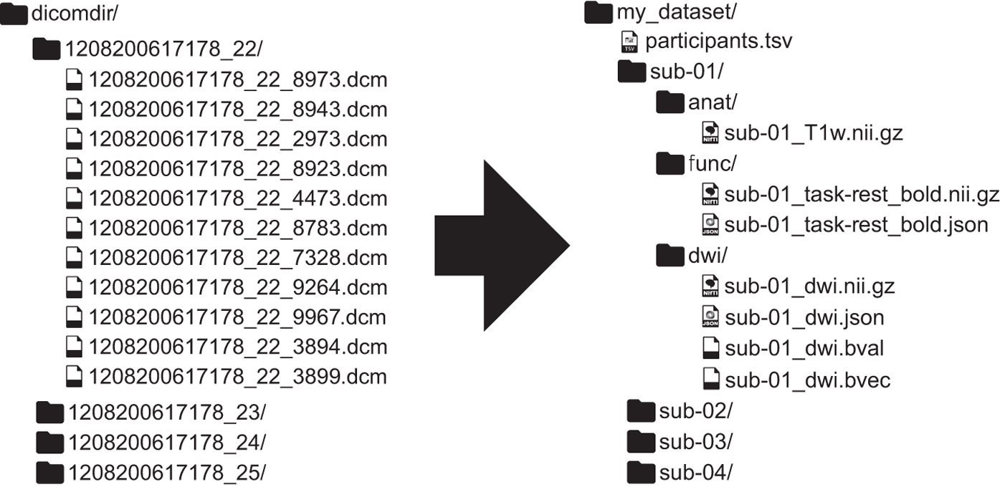
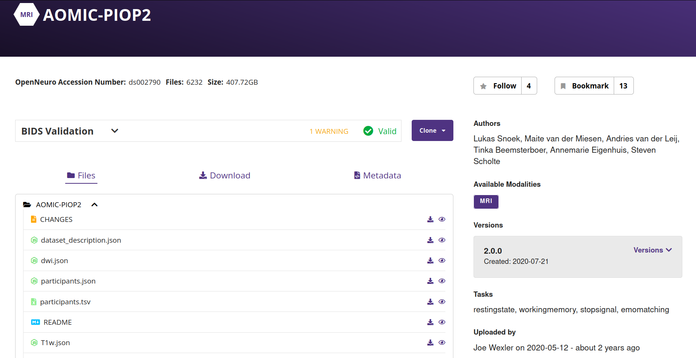
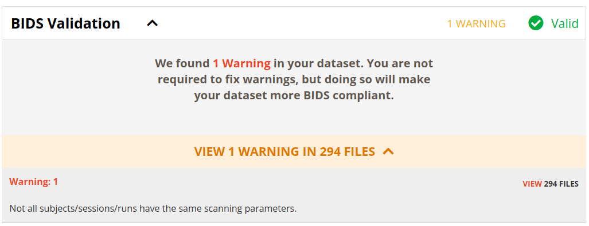
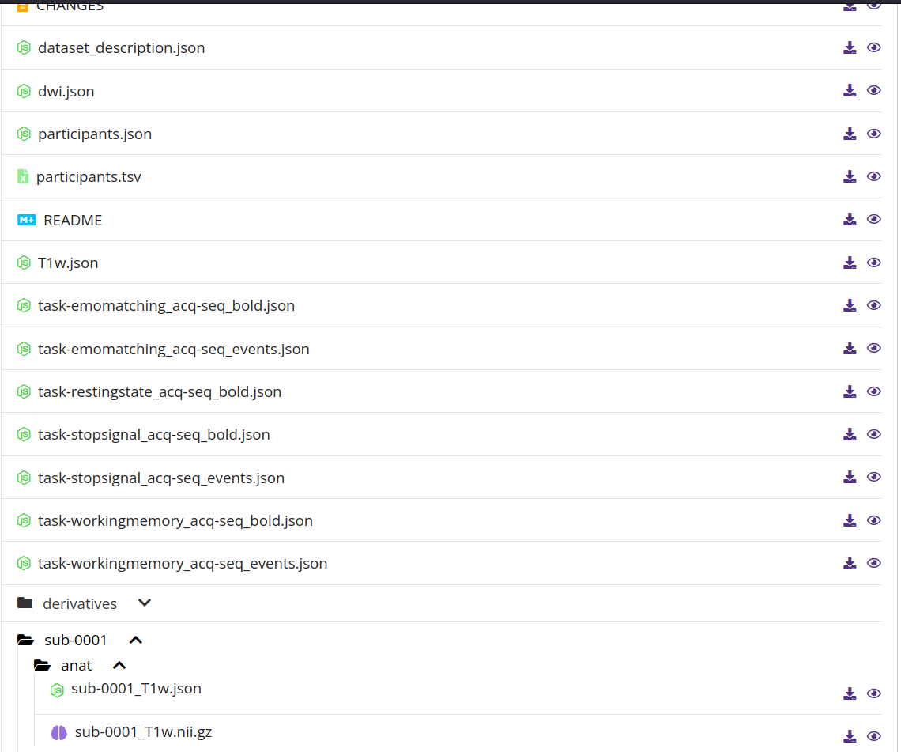
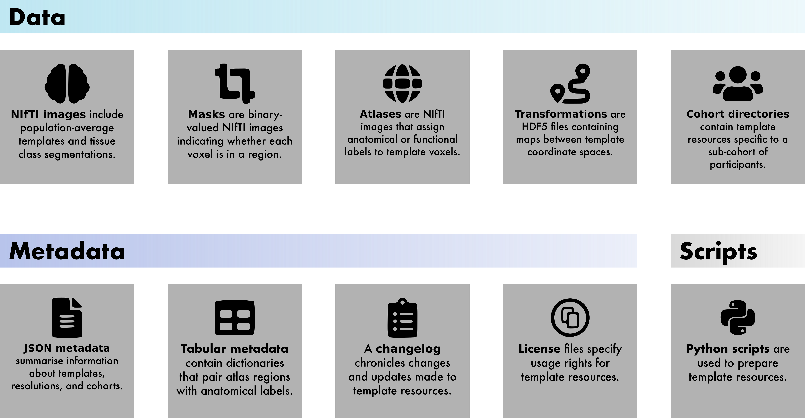

name: title layout: true class: center --- layout: false count: false .middle.center[ # Executing BIDS-Apps on large datasets and the *NiPreps* framework <br /> <br /> ### Oscar Esteban #### CHUV | Lausanne University Hospital ###### [www.nipreps.org/assets/OHBM2022](https://www.nipreps.org/assets/OHBM2022) ] --- layout: false count: false .middle.center[ # Executing BIDS-Apps on large datasets and the *NiPreps* framework <br /> <br /> ### Oscar Esteban #### CHUV | Lausanne University Hospital ###### [www.nipreps.org/assets/OHBM2022](https://www.nipreps.org/assets/OHBM2022) ] --- name: newsection layout: true .perma-sidebar[ <p class="rotate"> <a rel="license" href="http://creativecommons.org/licenses/by/4.0/"><img alt="Creative Commons License" style="border-width:0; height: 20px; padding-top: 6px;" src="https://i.creativecommons.org/l/by/4.0/88x31.png" /></a> <span style="padding-left: 10px; font-weight: 600;">Executing BIDS-Apps on large datasets and the <em>NiPreps</em> framework</span> </p> ] --- # Outline .boxed-content[ .distribute.large[ * Managing large datasets - Datalad 101 * BIDS, and why BIDS? * BIDS-Apps * The case of fMRIPrep * The NeuroImaging PREProcessing toolS (NiPreps) ] ] --- # Datalad 101 .boxed-content[ .distribute.large[ * Datalad (amongst many features) allows versioning of data * Datalad is based on Git and git-annex * It is critical to maintain large datasets with versioning * Enables access to lots of open datasets * More: [datalad.org](https://datalad.org) ] ] --- # BIDS - [bids.neuroimaging.io](https://bids.neuroimaging.io) <p align="center"> <p></p> </p> Specification: [bids-specification.readthedocs.io](https://bids-specification.readthedocs.io) --- # Example dataset: AOMIC-PIOP2 <p align="center"> <a href="https://openneuro.org/datasets/ds002790/versions/2.0.0"> <p></p><br /><br /> https://openneuro.org/datasets/ds002790/versions/2.0.0 </a> </p> --- # Example dataset: AOMIC-PIOP2 <p align="center"> <a href="https://openneuro.org/datasets/ds002790/versions/2.0.0"> <p></p><br /><br /> https://openneuro.org/datasets/ds002790/versions/2.0.0 </a> </p> --- # Example dataset: AOMIC-PIOP2 <p align="center"> <a href="https://openneuro.org/datasets/ds002790/versions/2.0.0"> <p></p><br /><br /> https://openneuro.org/datasets/ds002790/versions/2.0.0 </a> </p> --- # Example dataset: AOMIC-PIOP2 <div class="asciicast" id="502306"></div> --- # AOMIC-PIOP2 (`datalad get`) <div class="asciicast" id="496610"></div> --- # BIDS-Apps .boxed-content[ .distribute.large[ * Uniform I/O * Read in BIDS * Write out BIDS-Derivatives * Command-line interface specification: ```Shell bids-app-name /data/ds002790 /data/ds002790/derivatives/bids-app_1.0.0 participant ``` * Containerization: Docker & Singularity * Index of apps: https://bids-apps.neuroimaging.io/apps/ ] ] --- # BIDS-Apps: subject-wise parallelization <p align="center"> <a href="https://doi.org/10.1371/journal.pcbi.1005209"> <img src="../assets/journal.pcbi.1005209.g002.png" width="90%" /><br /><br /> (Gorgolewski et al., 2017) </a> </p> --- <p align="center"> <a href="https://doi.org/10.1038/s41592-018-0235-4"> <img src="../assets/fmriprep-workflow-final.svg" width="73%" /><br /> </a> <em>fMRIPrep</em> (<a href="https://doi.org/10.1038/s41592-018-0235-4">Esteban et al., 2019</a>) </p> --- # Executing with Docker .boxed-content[ .distribute.large[ * Docker tips & guidelines: https://nipreps.org/apps/docker * Running the example dataset: ```Shell $ docker run -ti --rm \ -v /data/datasets/ds002790:/data:ro \ -v /data/derivatives/ds002790:/derivatives \ nipreps/fmriprep:21.0.2 \ /data /derivatives/fmriprep-21.0.2 \ participant ``` ] ] --- # Important considerations .boxed-content[ .middle[ * Interim results ("work directory"): * Preserve them if you will need to re-run the data (**caching**) * Make it a fast filesystem, if possible (e.g., `/tmp/` on an SSD system) * It will require a lot of space (10 GB per subject and task) - which sets a conflict with the previous item. * Docker / Singularity: * FreeSurfer license file - **mount into containers!** * (docker only) write as user to preempt outputs have root ownership * Memory and parallelization: * The more parallel, the more memory consumption * Recommendation: run single-subject processes (BIDS-Apps) * <span class="red">WATCH OUT FOR RACE CONDITIONS!</span> * Find a good balance between ``--omp-nthreads`` and ``--nprocs`` * Inputs: * BIDS Validation: dataset MUST be valid * Tip for large databases: use ``--bids-database-dir`` * If using datalad, data should have been pulled down with datalad get ] ] --- # Executing with Docker .large[ ```Shell $ docker run -ti --rm \ -v /data/datasets/ds002790:/data:ro \ -v /data/derivatives/ds002790:/derivatives \ -v $HOME/.cache/pybids:/cache/bids \ -v $HOME/tmp/fmriprep:/work \ -u $( id -u ):$( id -g ) \ nipreps/fmriprep:21.0.2 \ /data /derivatives/fmriprep-21.0.2 \ participant \ --participant-label 0021 \ --omp-nthreads 8 --nprocs 16 \ --work /work/sub-0021 -vv --skip-bids-validation \ --bids-database-dir /cache/bids/ds002790 ``` ] --- # Running *fMRIPrep* with Docker <div class="asciicast" id="496635"></div> --- ## The individual report <p align="center"> <video controls="controls" width="70%" name="Video Name" src="https://www.nipreps.org/assets/fmriprep-report.mov"></video> </p> --- # Run-to-run reproducibility .boxed-content[ .distribute.large[ *(... or the lack thereof)* * *fMRIPrep* does not guarantee full run reproducibility with `--omp-nthreads` larger than 1 * Which means, **disabling within-node parallelization**. * *fMRIPrep* writes out a config file * stores **seeds** for all random number generators it has access to ] ] --- # "Analysis-grade" data .larger[ The *NeuroImaging PREProcessing toolS* (*[NiPreps](https://nipreps.org).org*) augment scanners to produce *analysis-grade* data (= **directly consumable by analyses**) ] <br /> .pull-left[ ***Analysis-grade* data** is an analogy to the concept of "*sushi-grade (or [sashimi-grade](https://en.wikipedia.org/wiki/Sashimi)) fish*" in that both are: .large[**minimally preprocessed**,] and .large[**safe to consume** directly.] ] .pull-right[ <img align="right" style='margin-right: 50px' src="https://1.bp.blogspot.com/-Osh4H4WXka0/WlMJmVgkZTI/AAAAAAAAEMY/GynUzSomJ-EBiyqv2m-maiOyKSM7SOmNACLcBGAs/s400/yellowfin%2Btuna%2Bsteaks%2Bnutrition.jpg" /> ] --- <p align="center"> <img src="../assets/nipreps-chart.svg" width="63%" /><br /> <em>NiPreps</em> (<a href="https://doi.org/10.31219/osf.io/ujxp6">Esteban et al., 2020</a>) </p> --- template: title layout: false .middle[ <p align="center"> <img src="https://github.com/oesteban/fmriprep/raw/f4c7a9804be26c912b24ef4dccba54bdd72fa1fd/docs/_static/fmriprep-21.0.0.svg" width="95%" /> </p> ] --- template: newsection layout: false # *TemplateFlow* | Archive <p align="center"> <p></p><br /> (<a href="https://doi.org/10.1101/2021.02.10.430678">Ciric et al., 2022</a>) </p> --- # *TemplateFlow* | Client <div class="asciicast" id="501873"></div> --- .boxed-content[ .distribute[ ### *NiPreps* is a framework for the development of preprocessing workflows * Principled design, with BIDS as a strategic component * Leveraging existing, widely used software * Using NiPype as a foundation ### Why preprocessing? * We propose to consider preprocessing as part of the image acquisition and reconstruction * When setting the boundaries that way, it seems sensible to pursue some standardization in the preprocessing: * Less experimental degrees of freedom for the researcher * Researchers can focus on the analysis * More homogeneous data at the output (e.g., for machine learning) * How: * Transparency is key to success: individual reports and documentation (open source is implicit). * Best engineering practices (e.g., containers and CI/CD) ### Challenges * Testing / Validation! ] ] --- # Conclusion <p align="center"> <img src="https://media.springernature.com/full/springer-static/image/art%3A10.1038%2Fs41596-020-0327-3/MediaObjects/41596_2020_327_Fig1_HTML.png?as=png" width="90%" /><br /> (<a href="https://doi.org/10.1038/s41596-020-0327-3">Esteban et al., 2020</a>) </p> --- .boxed-content[ .middle.center[ # Thanks! ### Questions? ### Join the NiPreps Hackathon! ] ]